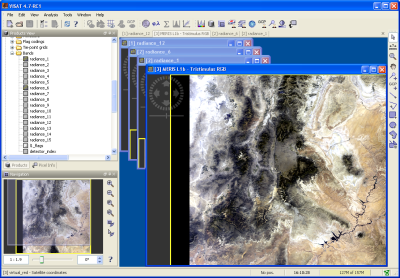
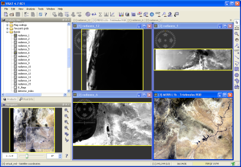
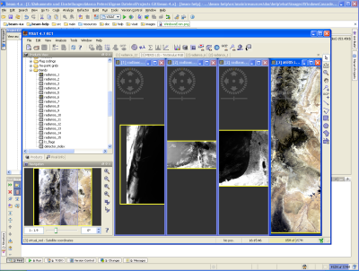
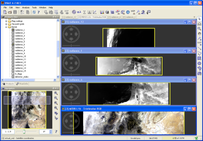

VISAT's Window Menu
The window menu contains entries to perform actions on the currently opened views.
- Cascade
Arranges the views as a cascaded stack.

- Tile Evenly
Distributes evenly the available space among the current views.

- Tile Horizontally
Arranges the views in columns.

- Tile Vertically
Arranges the views in rows.

- Close All
Closes all opened views.
- Dynamic entries: "Name of View"
Activates the selected view.